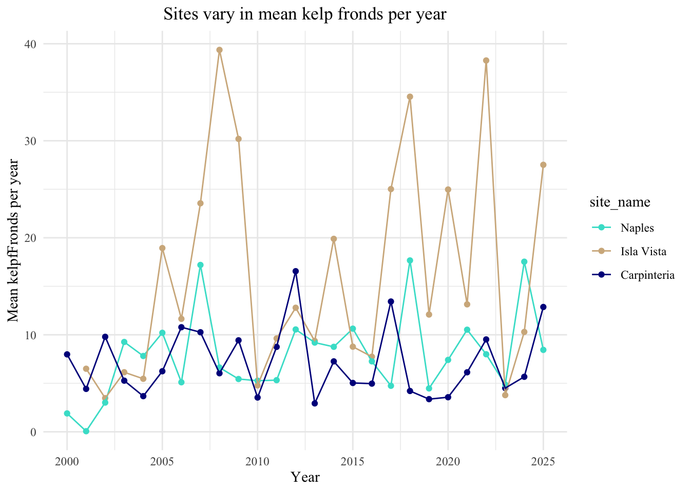
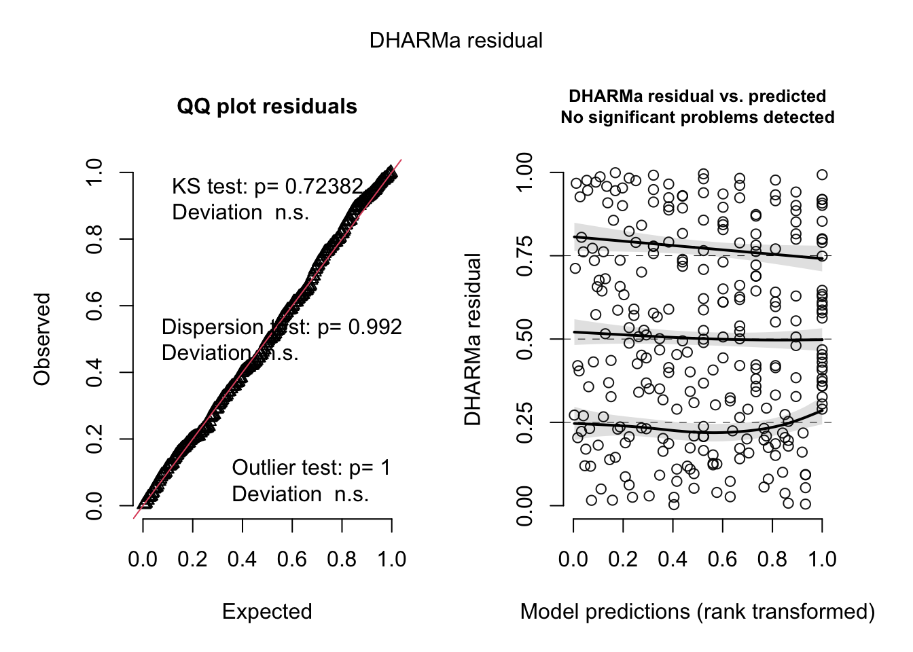
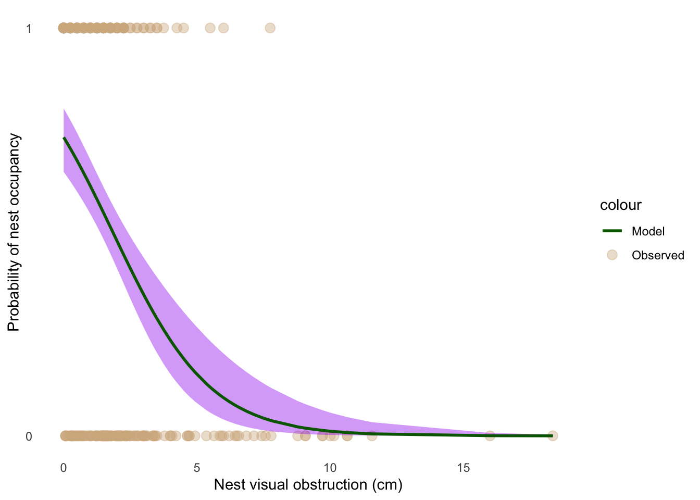
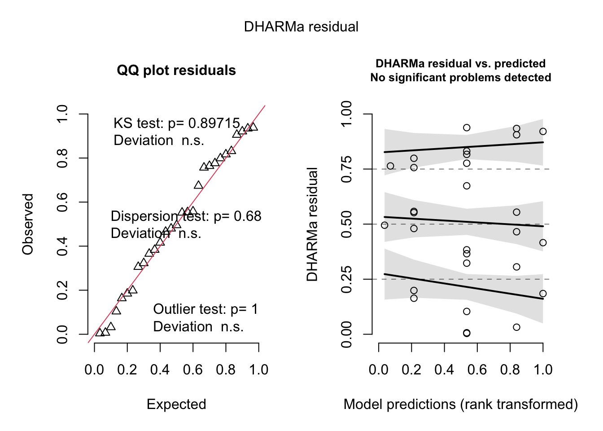
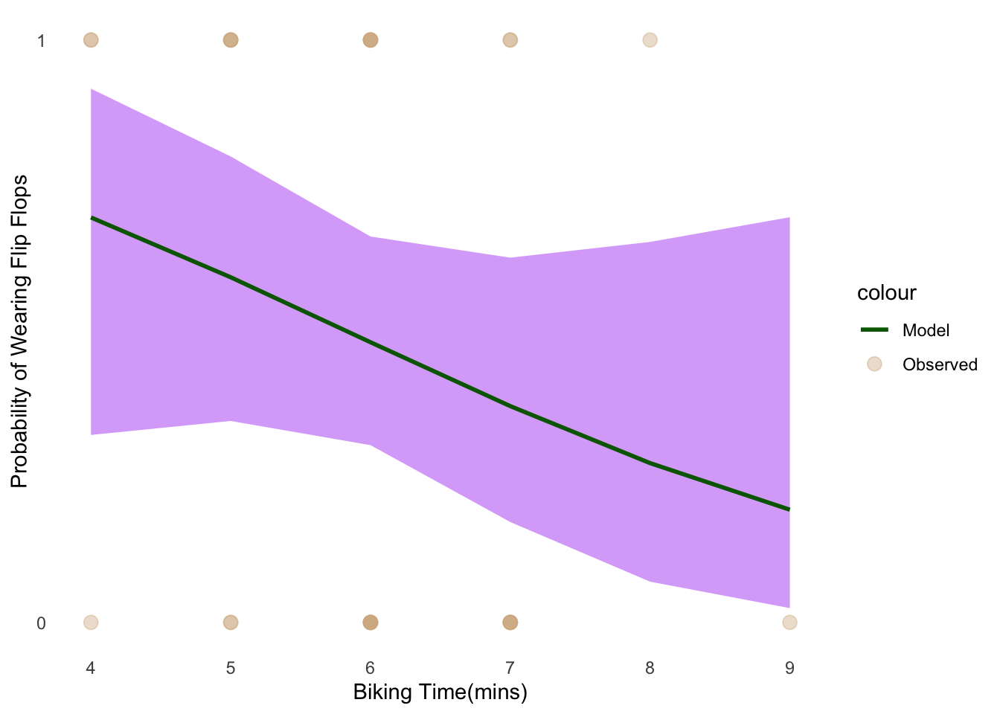

library(tidyverse)
library(janitor)
library(readr)
library(DHARMa)
library(ggeffects)
kelp <- read_csv("../Data/Annual_Kelp_All_Years_20250903.csv")
mopl <- read_csv("../Data/MOPL_nest-site_selection_Duchardt_et_al._2019.csv")
my_data <- read_csv("../Data/my_data - autrin 2.csv")ENVS 193DS Final
https://github.com/autrinp/Winter-2026_Final
Problem 1
a.
In part 1 they used simple linear regression technique as there was a predictor variable(precipitation) and a response variable(flooded wetland area. Also it doesn’t predict a relationship showing there’s a relationship between the two variables
In part 2 they used a non-parametric test as it looks to measure the “median” flooded wetland area. When measuring 5 predictor variables, they used a Kruskal-Wallis rank sum test.
b.
- Measuring the median values, a box plot would be the most appropriate for part 2. The x-axis would have the water year classifications and the y-axis would have the response variable(flooded wetland area). Each group would be represented by a box with a middle line(the median), whiskers to emphasize the range of the data, and the IQR which shows the spread of the data.
c.
Part 1: Precipitation doesn’t predict flooded wetland area in the San Joaquin River Delta (linear regression, F(df of model) = f statistic value, R^2 = determination, p = 0.11, 𝛂 = significance level).
Part 2: We found no difference in median flooded wetland area across different water year classification (wet, above normal, below normal, dry, critical drought)(Kruskal_Wallis test, X²(distribution)(df) = test statistic value, p = 0.12, 𝛂 = significance level)
d.
- River/tide height(continuous variable) could affect flooded wetland area. Higher water levels means nothing is stopping the water from flooding the nearby areas. Management factors may play a role in this as they may control how much water is allowed in during high tide seasons.
Problem 2
a.
kelp_clean <- kelp |> #creating new data set from "kelp"
clean_names() |> #clean names to be all lower case with _
filter(site%in% c("IVEE", "NAPL", "CARP" )) |> #filter to only include "IVEE", "NAPL", and "CARP"
mutate(site_name = case_when( #mutate the existing site_name column
site == "NAPL" ~ "Naples", #Fill in "Naples" when "NAPL" appears
site == "IVEE" ~ "Isla Vista", #Fill in "Isla Vista" when IVEE appears
site == "CARP" ~ "Carpinteria" #Fill in "Carpenteria" when "CARP" appears
)) |>
filter(!(date == "2000-09-22" & transect == "6" & quad == "40")) |> #negating this row of data
group_by(site_name, year) |> #group by site name and year
summarize(mean_fronds = mean(fronds)) |> # calculate the mean
ungroup() |> #ungroup the data
mutate(site_name = as_factor(site_name), #makes the categorical variable into a factor so it can be used in models
site_name = fct_relevel(site_name, #relevel gives order
"Naples", "Isla Vista", "Carpinteria"))kelp_clean |> # pulling from "kelp_clean" data
slice_sample(n = 5) #pulling 5 random data points# A tibble: 5 × 3
site_name year mean_fronds
<fct> <dbl> <dbl>
1 Carpinteria 2022 9.52
2 Isla Vista 2019 12.1
3 Naples 2021 10.5
4 Naples 2006 5.11
5 Carpinteria 2016 4.97kelp_clean |> #pulling from data
str() #showing structureed datatibble [77 × 3] (S3: tbl_df/tbl/data.frame)
$ site_name : Factor w/ 3 levels "Naples","Isla Vista",..: 3 3 3 3 3 3 3 3 3 3 ...
$ year : num [1:77] 2000 2001 2002 2003 2004 ...
$ mean_fronds: num [1:77] 7.98 4.42 9.79 5.27 3.67 ...b.
This data set was deleted because it was -99999 which indicates missing or not needed data points. Found in “methods” tab of data page.
c.
ggplot(data = kelp_clean, #creating plot from data set "kelp_clean"
aes(x = year, #x-axis
y = mean_fronds, #y-axis
color = site_name)) + #color by site na,e
geom_point() + #add points for data
geom_line() + #connect poionts with a line
scale_color_manual(
values = c("Naples" = "turquoise", #color Naples points
"Isla Vista" = "tan", #color Isla Vista points
"Carpinteria" = "darkblue" #color carpenteria points
)) +
labs(x = "Year", #rename x-axis
y = "Mean kelpfFronds per year", #rename y-axis
title = "Sites vary in mean kelp fronds per year") + #add title
theme_minimal() + #change background to white
theme(
panel.border = element_blank(), #eliminate border
plot.title = element_text(hjust = 0.5), #center title
text = element_text(family = "Times New Roman")) #change font to times new roman
d.
Isla vista looks like it has the the the highest and lowest peaks and most variability between each peak
Carpinteria has the flattest set of data showing less variability.
Problem 3
a. The 1’s and 0’s represent whether a nest site is being used by the Mountain Plover or not. 1’s indicate a used site and 0’s indicate an available site.
b. Visual obstruction(continuous) - “selected model indicated that plovers avoided nesting in areas with a maximum vegetation height >11 cm, corresponding with an average visual obstruction of >5 cm.”(Discussion, paragraph 4). As height of the vegetation increases(increasing visual obstruction) thsi decreases the chance of a plover to nest there as they prefer open areas.
Distance to prairie dog colony(continuous) - “this is the first direct evidence that colony size may negatively influence plover density”(Discussion, paragraph 2). As distance to colony edge increases(colony size), the probability of Mountain Plover nest site use would decrease.
c.
| Model Name | Visual Onbstruction | Distance to praire colony | Model Description | |||
| mod_null | No predictor(fmodel) | |||||
| Mod_sat | X | X | All predictors(model | |||
| Mod_Edgedist | X | Distance only | ||||
| Mod_vo | X | Visual Only |
d.
mopl_clean <- mopl |> # creating a new data setmopl_clean
clean_names() |> # cleaning the names
mutate(used_bin = ifelse(id == "used",1, 0)) |> # making a new column to show 1 if nest is used and 0 if nest isnt used
select(used_bin, edgedist, vo_nest) #selecting bins to usemod_null <- glm(used_bin ~ 1, #making new object "mod_null", has no predictors
data = mopl_clean, # data
family = binomial) #error distributionmod_sat <- glm(used_bin ~ edgedist + vo_nest, # making new object mod_sat, both edgedist and vo as predictors
data = mopl_clean, # data
family = binomial) #error distributionmod_edgdist <- glm(used_bin ~ edgedist, # making new object mod_edge, edgedist as predictor
data = mopl_clean,# data
family = binomial) #error distributionmod_vo <- glm(used_bin ~ vo_nest, # making new object mod_vo, vo as predictor
data = mopl_clean,# data
family = binomial) #error distributione.
AIC(mod_sat,
mod_null,
mod_vo,
mod_edgdist) # calculate the AIC for each model df AIC
mod_sat 3 333.7410
mod_null 1 384.6172
mod_vo 2 331.7690
mod_edgdist 2 386.0911The best model as determined by Akaike’s Information Criterion (AIC) is mod_vo for obstruction of visualization(AIC = 363.4420).
f.
plot(simulateResiduals(mod_vo)) # diagnostic plot
g.
mod_preds <- ggpredict(mod_vo,
terms = "vo_nest[all]") # predicted probabilites
ggplot(mopl_clean, # using mopl_clean data frame
aes(x = vo_nest, # set x-asix
y = used_bin #set y-axis
)) +
geom_point(aes(color = "Observed"),
size = 3,
alpha = 0.4) + # coloring data points)
geom_ribbon(data = mod_preds, # using mod_preds for ribbon data
aes(x = x, # same x-axis
y = predicted,
ymin = conf.low,
ymax = conf.high),
fill = "purple", # Setting color
alpha = 0.4) +
geom_line(data = mod_preds, # using mod_preds data for line
aes(x = x, #same x-axis
y = predicted,
color = "Model"), # coloring the line and setting width
linewidth = 1) +
labs(x = "Nest visual obstruction (cm)", # x-axis name
y = "Probability of nest occupancy") + #y-axis name
scale_y_continuous(limits = c(0, 1), # setting y-axis scale
breaks = c(0, 1)) +
scale_color_manual(values = c("Observed" = "tan", # manually coiloring the line and data points
"Model" = "darkgreen")) +
theme_minimal() + # changing background white
theme(panel.grid = element_blank()) # removing gridlines
h. Figure 1: There’s a clear decrease in nest occupation related to visual obstruction(cm). Probability of nest occupation is on the y-axis and nest visual obstruction(in cm) is on the x-axis. The green line is the predicted probability and the purple shading is the confidence interval. The tan data points represent nest occupation. Data citation: Duchardt, Courtney; Beck, Jeffrey; Augustine, David (2020). Data from: Mountain Plover habitat selection and nest survival in relation to weather variability and spatial attributes of Black-tailed Prairie Dog disturbance [Dataset]. Dryad. https://doi.org/10.5061/dryad.ttdz08kt7.
i.
ggpredict(mod_vo, # using visual obstruction model
terms = "vo_nest [0]") # visual obstruction = 0# Predicted probabilities of used_bin
vo_nest | Predicted | 95% CI
--------------------------------
0 | 0.73 | 0.65, 0.80j. Visual obstruction was the best model when predicting nest occupation by Mountain Plovers. Based on the predicted probabilities, nest occupation when there’s no visual obstruction is 73%(CI: 0.65,0.80). The plovers tend to select sights with open land and no predators in sight. Distance to prairie dog colony is correlated with visual obstruction as the prairie dogs destroy the vegetation creating short vegetation.
Problem 4
a.
My affective visualization shows whether wearing flip flops on affects my biking time to class. I made every data point the wheel of a bike, and made the bike get larger the higher the time got. I added a shoe and flipflop to the seat of the corresponding variable on the plot. My exploratory data from HW 2 is just a simple jittered plot with showing wearing flip flops(yes/no) on the x-axis and biking time(mins) on the y-axis. They were both similar in the way that I still displayed the x and y axis on my affective visualizations and it showed. the same spread.
The main pattern was that there was no immediate affect that flip flops had on biking time. Biking time varied throughout the plot mostly due to different factors, such as weather, and whether I was late to class or not.)
The best feedback I got was that it was it was cool to see how flip flops don’t affect biking time.
b. Whether or not biking time is affected by wearing flip flops(yes/no) I would use a linear regression model as predictor variable(wearing flip flops) is a binary categorical data point. This would allow me to see the affect wearing flip flops has on biking time
c.
My_data_clean <- my_data[-1,] |> # creating new data set
clean_names() |> # cleaning the names
mutate(flips_bin = ifelse(wearing_flips == "Yes", 1, 0))|> # making a new column that displays 1 if wearing flips and 0 if not
select(flips_bin, biking_time_mins) #selecting only binary response and predictormy_mod <- glm(flips_bin ~ biking_time_mins, # creating a glm, ocean_bin as a function of workload
data = My_data_clean, # data
family = "binomial") plot(simulateResiduals(my_mod) # using DHARMa to plot residuals
)
summary(my_mod)
Call:
glm(formula = flips_bin ~ biking_time_mins, family = "binomial",
data = My_data_clean)
Coefficients:
Estimate Std. Error z value Pr(>|z|)
(Intercept) 2.6270 2.1685 1.211 0.226
biking_time_mins -0.4505 0.3577 -1.259 0.208
(Dispersion parameter for binomial family taken to be 1)
Null deviance: 40.168 on 28 degrees of freedom
Residual deviance: 38.425 on 27 degrees of freedom
AIC: 42.425
Number of Fisher Scoring iterations: 4d.
my_pred <- ggpredict(my_mod,
terms = "biking_time_mins") # predicted probabilites
ggplot(My_data_clean, # Using my clean data
aes(x = biking_time_mins, # x-axis
y = flips_bin )) + # y-axis
geom_point(aes(color = "Observed"), # coloring data points
size = 3, # setting the size
alpha = 0.4) +
geom_ribbon(data = my_pred, # using ribbon data
aes(x = x, # same x-axis
y = predicted,
ymin = conf.low,
ymax = conf.high),
fill = "purple", # Setting color
alpha = 0.4) +
geom_line(data = my_pred, # using data for line
aes(x = x, # same x-axis
y = predicted,
color = "Model"), # coloring the line and setting width
linewidth = 1) +
labs(x = "Biking Time(mins)", # x-axis name
y = "Probability of Wearing Flip Flops") + # y-axis name
scale_y_continuous(limits = c(0, 1),
breaks = c(0, 1)) +
scale_color_manual(values = c("Observed" = "tan", # manually coiloring the line and data points
"Model" = "darkgreen")) +
theme_minimal() + # setting the theme
theme(panel.grid = element_blank()) # removing gridlines
e. Figure 2: The probability of wearing flip flops seems to decrease as biking time(mins) increases. Biking time(in mins) is displayed on the x-axis and probability of wearing flip flops is displayed on y-axis. The dark green line shows the probability of wearing flip flops with the purple shaded showing the 95% confidence interval. The tan points represent the observed data of biking time
f. The chances of wearing flip flops seemed to very low when time on the bike was longer. This is saying that I was riding my bike faster when I was wearing flip flops.
g. I shared my visualization with the class